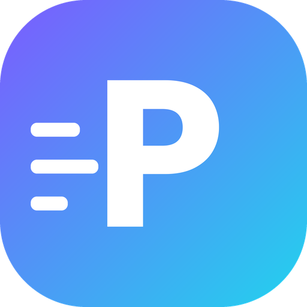

PikiOptimizerPiki Optimizer riconosce i tuoi componenti, controlla la salute del computer e lo ottimizza in un clic per giochi a bassa latenza, ping basso e After Effects. Ogni modifica è spiegata in parole semplici e si annulla con un clic.
Pensato per chi non se ne intende, completo per chi vuole il controllo totale.
Dischi e usura SSD, schermate blu, errori hardware (WHEA), driver, Windows, antivirus, temperature, RAM in single channel, XMP spento, Hz del monitor, rete.
Scegli Gioco, Competitivo, Video e After Effects, Uso quotidiano o Portatile: attiva solo ciò che è sicuro per i tuoi componenti.
CPU, scheda video e VRAM, RAM e canali, dischi NVMe/SSD/HDD, scheda madre, schermi, rete. I consigli cambiano in base al tuo PC.
Servizi, app all'avvio e processi in 3 livelli. Protegge in automatico ciò che usi: stampante, Bluetooth, Xbox, Windows Hello.
Test di ping, jitter e pacchetti persi, test sotto carico (bufferbloat), DNS più veloce, stack TCP e scheda di rete ottimizzati.
Modalità Render, impostazioni consigliate calcolate per il tuo PC, cache sul disco più veloce, priorità alta e GPU dedicata.
Niente trucchi da forum che rompono Windows. Ogni voce ti dice cosa fa e cosa potrebbe smettere di funzionare.
Prima di ogni ottimizzazione crea un punto di ripristino di Windows.
Il valore originale di ogni impostazione viene salvato: annulli una voce o tutto con un clic, anche dopo mesi.
Windows Update, Defender, firewall e i servizi critici non vengono mai disattivati. Anzi: se un altro programma l'ha fatto, te lo segnala.
Un solo file, come qualsiasi altra app.
Piki Optimizer Setup: un unico file, niente cartelle da estrarre.
Aprilo con un doppio clic e premi Installa. In pochi secondi trovi Piki Optimizer sul desktop e nel menu Start.
Apri l'icona sul desktop, conferma con Sì e premi Ottimizza il mio PC. Si disinstalla da Impostazioni > App.
Preferisci lo zip? PikiOptimizer.zip
Piki Optimizer è un programma nuovo e non firmato digitalmente: se il browser chiede conferma scegli "Mantieni", poi su Windows clicca "Ulteriori informazioni" → "Esegui comunque". Il codice è aperto e leggibile su GitHub.
Servono per cambiare impostazioni di sistema come piano energetico, servizi e rete. Senza, non potrebbe ottimizzare nulla.
Sì, sempre: sezione Ripristino → "Annulla tutte le modifiche", oppure il punto di ripristino di Windows.
Il ping dipende soprattutto da distanza dal server e qualità della linea. Piki Optimizer elimina ciò che lo peggiora dal tuo lato (risparmio energetico della scheda di rete, upload in background, Wi-Fi instabile, bufferbloat) e ti dice esattamente cosa sistemare.
Yes: the app detects your Windows language and can be switched to English in Settings.